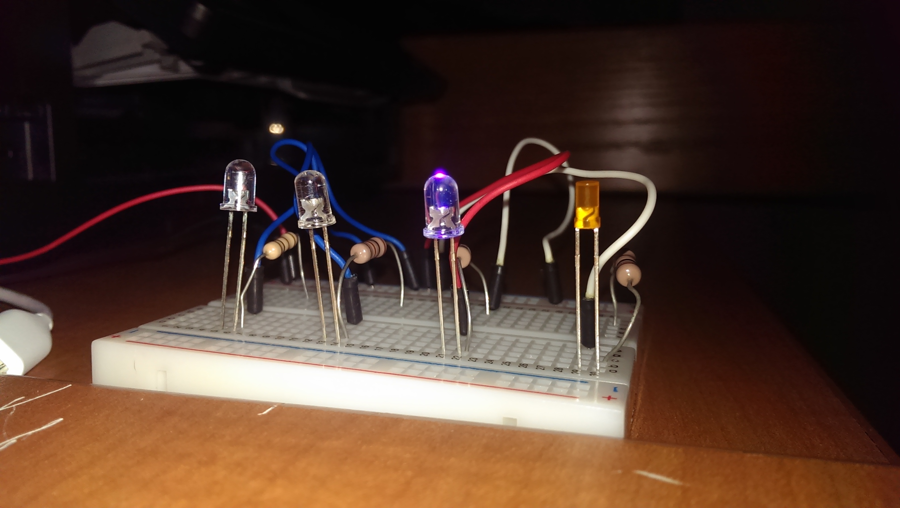
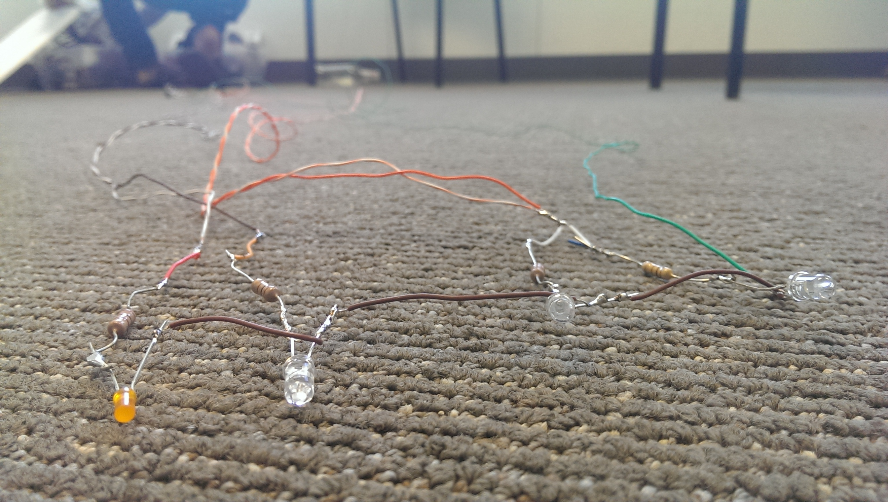
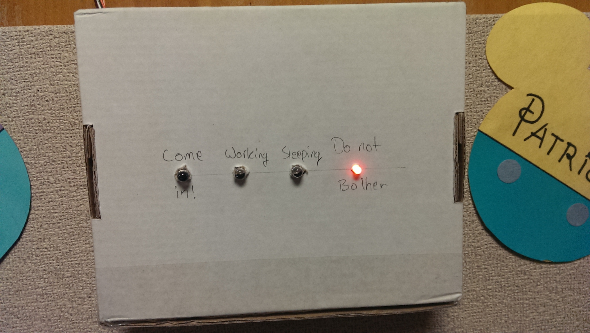
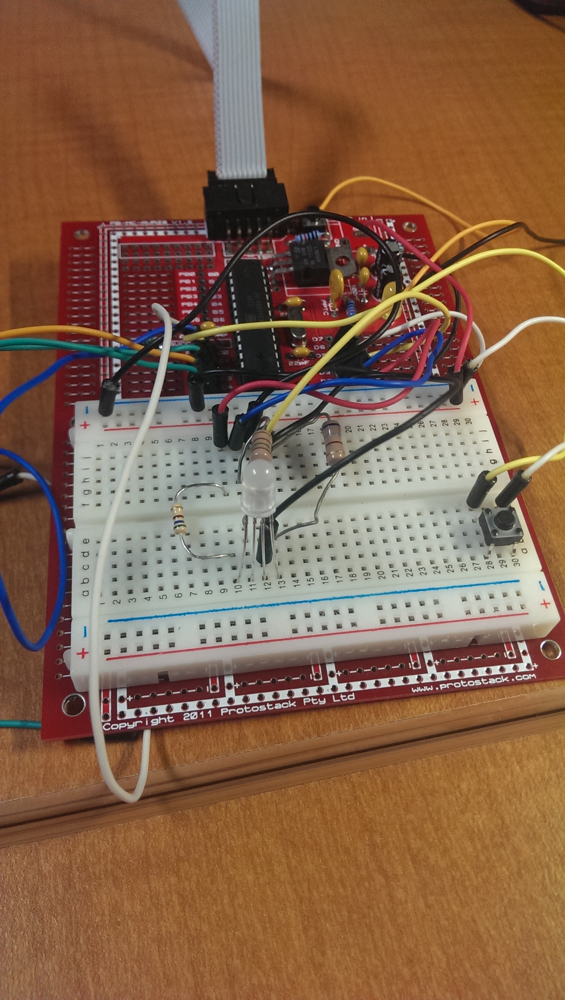
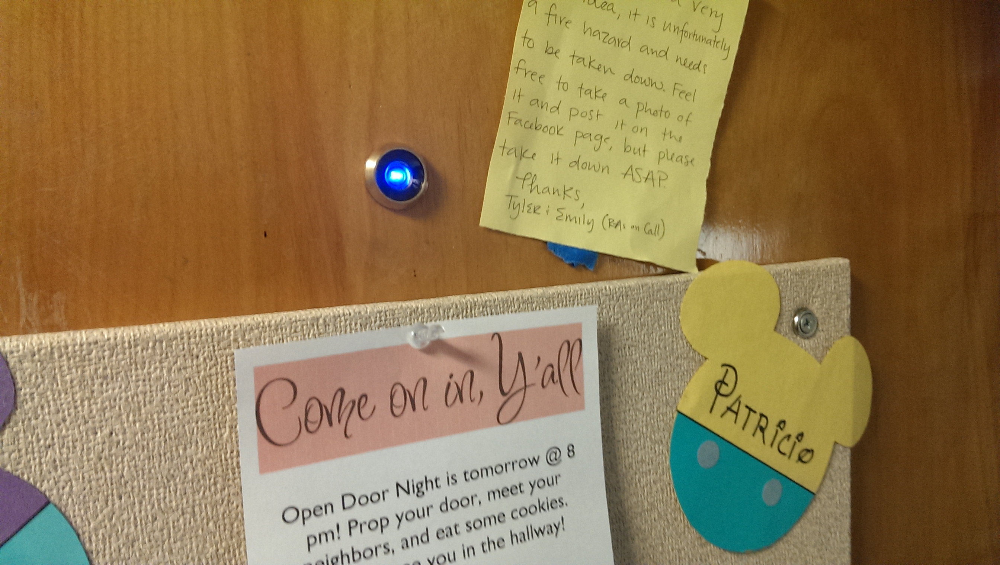
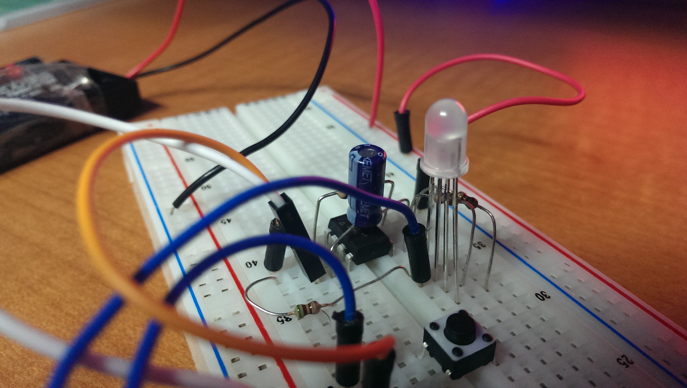
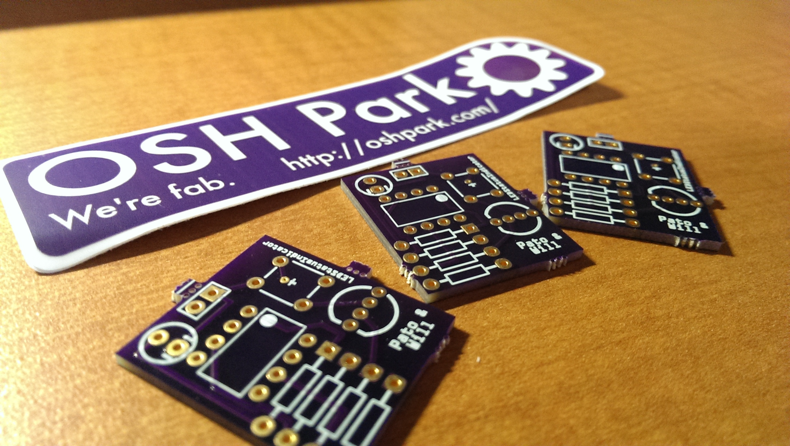
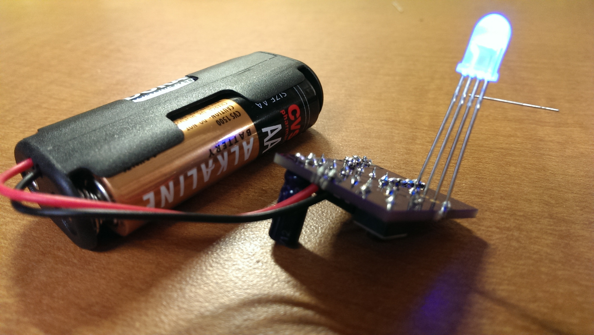
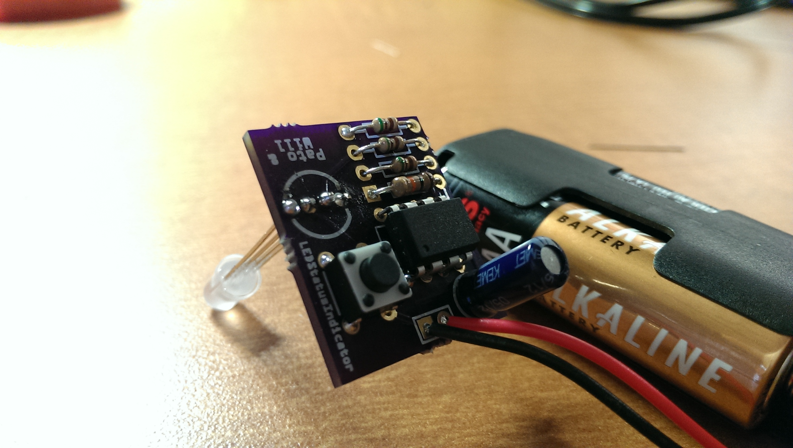
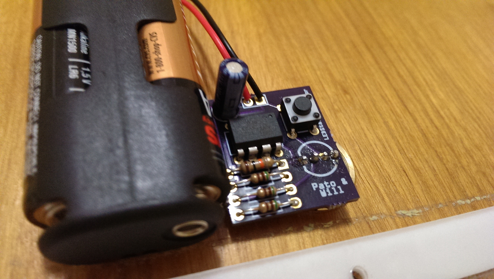

LEDStatusIndicator
Handy device that you can use to inform people outside your dorm on whether you are available, working, sleeping, or in need of solitude
First Protype
The first prototype was just a breadboard with four LEDs. There was no way of changing color besides manually using a jump cable to power them. 
Second Protype
The second prototype did not use a breadboard, instead I soldered the cables to the resistors to the LEDs. The anodes are all soldered together and the cathod so the LEDs are toggled by manually providing power to the desired LED. 
Third Prototype
The third prototype was housed in a cardboard box, the cables to power the LEDs would go over and around the door to the inside of the room where I could control which lights turn on. 
Fourth Prototype
The fourth prototype uses an ATMega168, a push button, and an RGB LED. The button iterates through the various preset colors on the LED.  This is how it looks on the other side of the door. 
Fifth Prototype
The goal of the fifth protype was to reduce parts, size, and costs, as well as make it battery powered. We used an ATTiny45, a capacitor, four resistors, a push button, jumper cables, and RGB LED.  In order to make it battery powered, we drastically reduced the frequence of the internal oscillator as well as made the LED pulse at interval instead of constnatly on.
First Beta
The PCB boards from our friends at Oshpark! (PS: They're awesome!) 
From the backside 
From the front side 
Here's how it looks mounted on the door! 